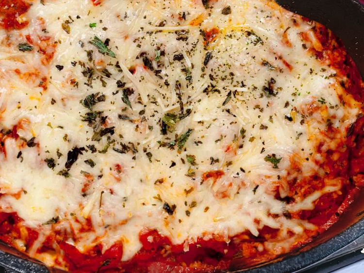

Tortellini Lasagna Skillet

Ingredients
- 1 pound ground beef
- 2 Italian sausage links
- 1 small onion, diced
- 6 ounces sliced mushrooms (optional)
- 1 pound cheese tortellini
- 1 (28 ounce) can crushed tomatoes
- 1 (14 1/2 ounce) can diced tomatoes
- 1 (8 ounce) can roasted garlic tomato sauce
- 3/4 teaspoon Italian seasoning
- 1/2 teaspoon granulated garlic
- salt and freshly ground black pepper to taste
- 4 ounces shredded mozzarella cheese
- chopped parsley, for garnish
Steps
- Preheat the oven to 350 degrees F (180 degrees C).
- Cook ground beef and sausage in a deep dish skillet over medium heat, breaking up the meat with a spatula, until browned, about 5 minutes.
- Add mushrooms and cook for 5 minutes more. Drain any excess grease.
- Stir in tortellini, crushed tomatoes, diced tomatoes, tomato sauce, Italian seasoning, and garlic. Season with salt and pepper. Smooth out mixture in the skillet, and top with mozzarella cheese.
- Bake in the preheated oven until cheese is melted and golden, about 35 minutes. Garnish with chopped parsley.
Home